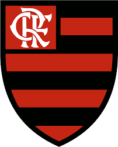

História do Flamengo

Se na época da fundação do Flamengo o remo reinava absoluto como esporte favorito dos cariocas, em pouco tempo outra modalidade começou a rivalizar pela preferência do público: o futebol.
E o Flamengo estava predestinado a ter papel de protagonista nesta nova paixão nacional.
Em 1911, houve um desentendimento interno no Fluminense. Alguns jogadores falavam trocar de clube, enquanto outros até mesmo pensavam em abandonar o futebol.
Foi quando Alberto Borgerth, um dos jogadores do Fluminense, fez a proposta de criar uma seção de futebol no Flamengo, onde já era remador. A ideia foi aprovada e, no dia 8 de novembro daquele ano, foi criado o Departamento de Esportes Terrestres rubro-negro.
A nova equipe chamava a atenção e dava os primeiros passos para ganhar enorme popularidade treinando na Praia do Russel. Em 3 de maio de 1912 acontece a primeira partida do Flamengo: uma grande vitória de 15 x 2 sobre o Mangueira, no campo da América.
A escalação rubro-negra naquele jogo foi Baena, Píndaro e Nery; Coriol, Gilberto e Galo; Bahiano, Arnaldo, Amarante, Gustavo e Borgerth.
Não demorou muito para vir o primeiro título: em 1912 o Flamengo ganhou seu primeiro Campeonato Carioca.
A conquista veio com uma rodada de antecedência, após a vitória de 2x1 sobre o Fluminense. Riemer fez o gol do título.
A primeira camisa do futebol foi a "Papagaio de Vintém", quadriculada em vermelho e preto.
Em 1914, a equipe passou a atuar com a "Cobra-Coral", que tinha listras horizontais rubro-negras convivendo com listras mais finas e brancas e foi utilizada pela equipe do primeiro título estadua (na foto). O manto Sagrado passou a ter apenas listras horizontais vermelhas e pretas a partir de 1916, quando o novo uniforme estreou em uma vitória de 3x1 sobre o São Bento, de São Paulo.
Estadio
O projeto do novo estádio do Flamengo prevê a construção de uma arena para 80 mil pessoas,
inspirada em estádios europeus como o Santiago Bernabéu, do Real Madrid, e a Allianz Arena, do Bayern de Munique.
O estádio será construído no terreno do antigo gasômetro, no centro do Rio de Janeiro, e ocupará uma área de 87 mil metros quadrados.
A partir da assinatura do Termo de Promessa de Compra e Venda, o prazo para apresentação do projeto é de 18 meses (um ano e meio).
A execução é prevista para 36 meses (três anos) que são prorrogáveis “na forma da lei, contados do seu licenciamento”, diz o documento.
Elenco principal
Goleiros:
◦ Agustín Rossi
◦ Matheus Cunha
Defensores:
◦ Léo Ortiz
◦ Léo Pereira
◦ Fabrício Bruno
◦ Ayrton Lucas
◦ Matías Viña
◦ Guillermo Varela
Meio-Campistas:
◦ Erick Pulgar
◦ Allan
◦ Gerson
◦ Giorgian de Arrascaeta
◦ Nicolás de la Cruz
Atacantes:
◦ Bruno Henrique
◦ Pedro
◦ Gabigol (Gabriel Barbosa)
Principais Títulos
- Campeonato Brasileiro: 7 vezes
- Taça Libertadores da América: 3 vezes
- Mundial de Clubes: 1 vez
- Copas do Brasil: 5 vezes
- Campeonato Carioca: 37 vezes
Contato
Quer saber mais sobre o Flamengo? Entre em contato conosco:11989271131